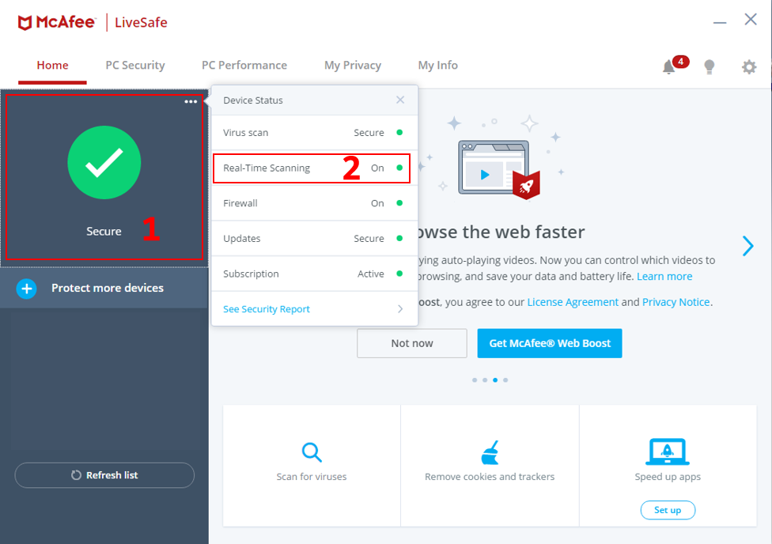
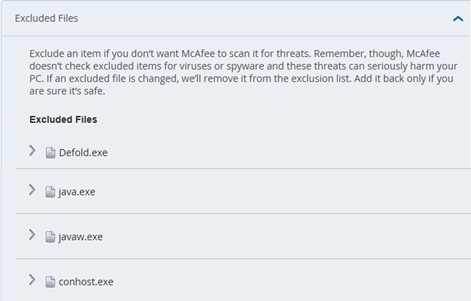

Tutorials for 2D games projects
Java exceptions

If you experience a Java socket timeout error it is probably because:
- Your version of the Java run-time is out of date. Try installing a new version: https://www.java.com/ES/download/
- Your anti-virus/firewall settings are preventing your game running by generating false positives. This typically happens with real-time scanning.
- Defold may need to be run in administrator mode.
An example of a false positive firewall alert:

Fixing the problem
The fix below describes the process using McAfee, but equivalent options should be available in other software.
- Open the firewall software you are running and change the real-time scanning settings.
In McAfee click, "Secure" [1] and "Real-Time Scanning" [2]

- Click "Add file" and add:
- Defold.exe
Located in C:\Program Files (x86)\Defold - java.exe
Located in In the C:\Program Files (x86)\Defold\packages\jdk11.0.1\bin - javaw.exe
Located in In the C:\Program Files (x86)\Defold\packages\jdk11.0.1\bin - conhost.exe
Located in C:\Windows\System32
- Defold.exe
- Run Defold.exe in administrator mode.

 Craig'n'Dave | Version 1.3
Craig'n'Dave | Version 1.3